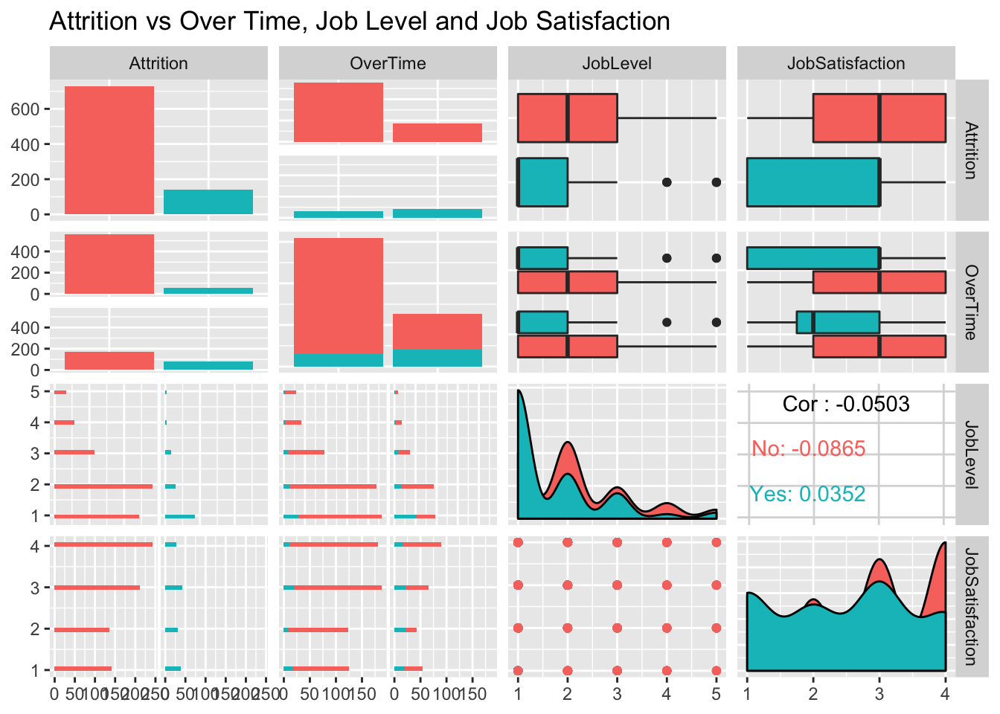
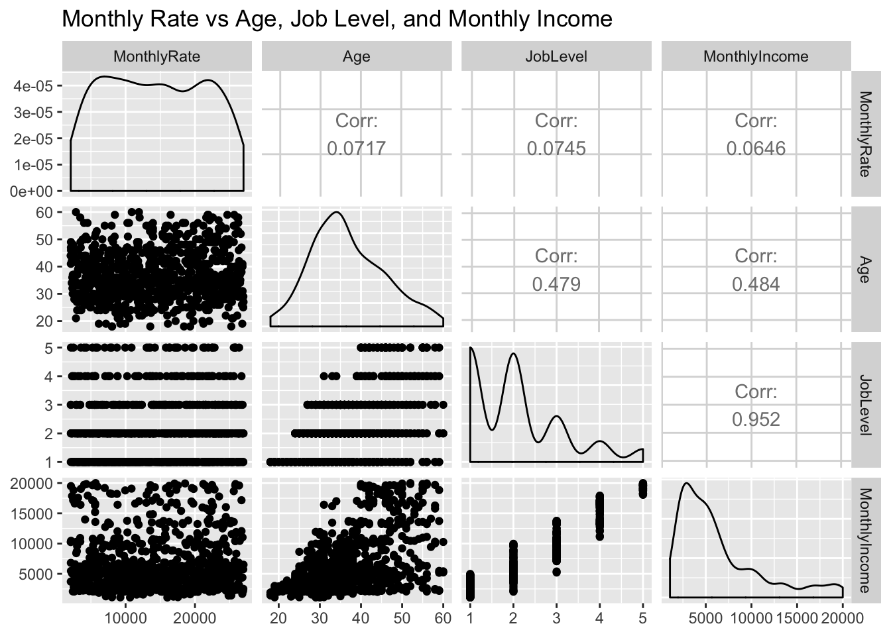
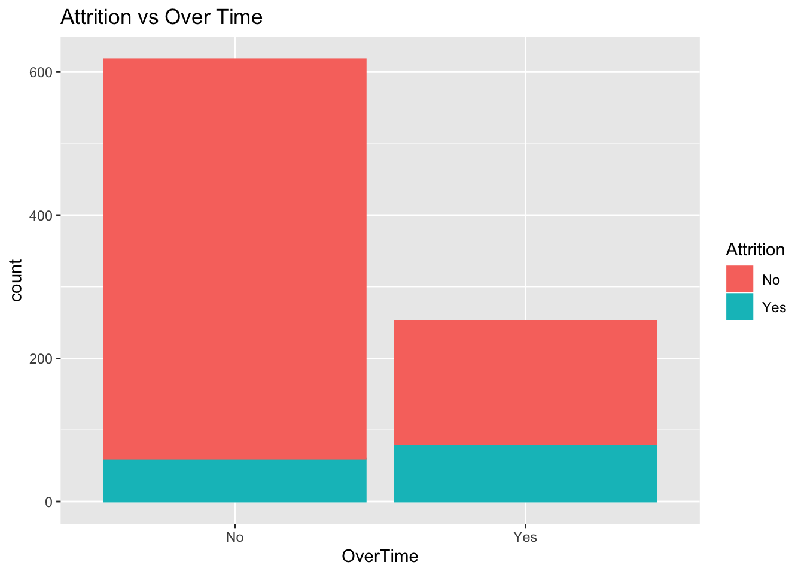
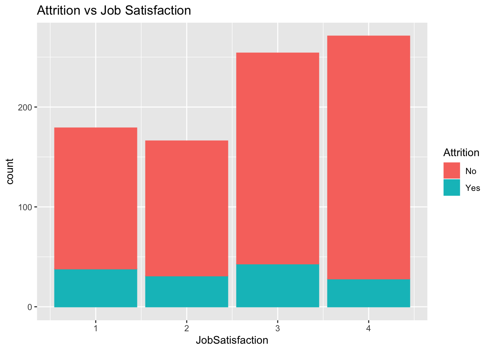
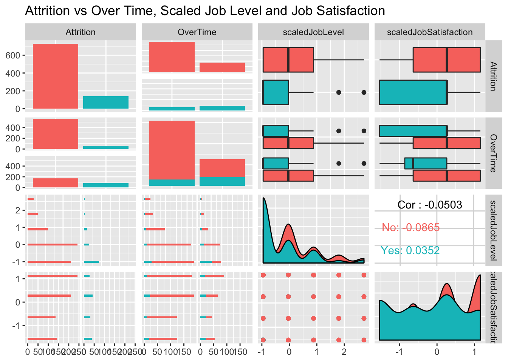
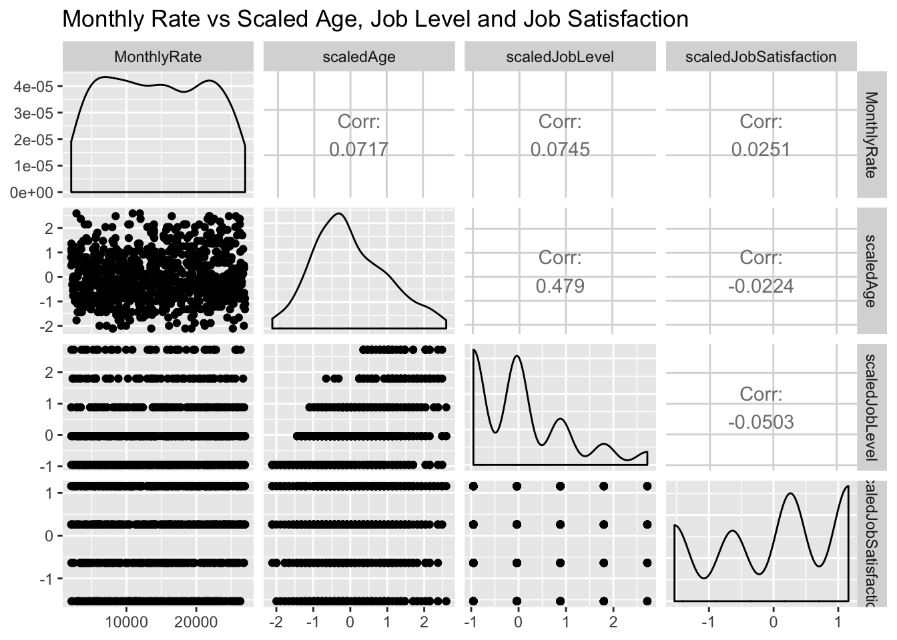
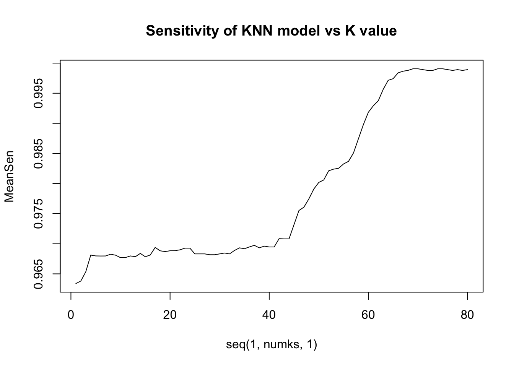
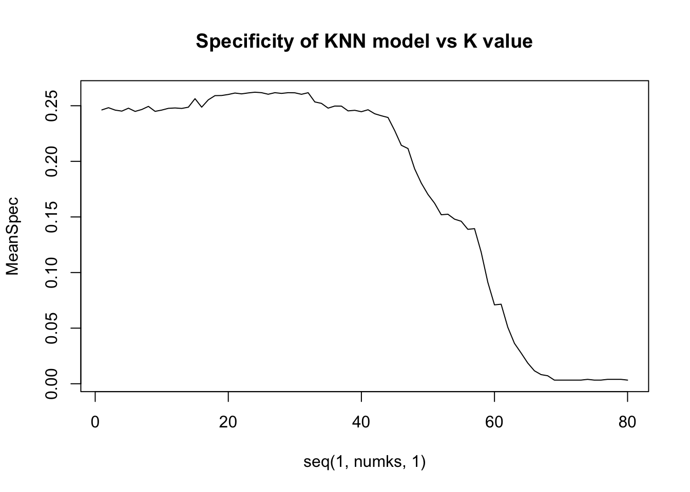
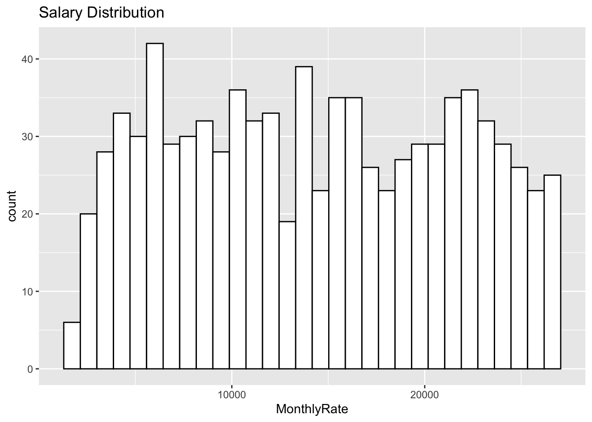

Hiring and training employees only to see them walk out the door is expensive. DDSAnalytics would like to give companies the foresight in predicting employee attrition. In this analysis we will identify potential characteristics of attrition and estimate the salary of employees. We found that Overtime was disproportionate in employees that left the company. Lower Job Levels and Job Satifaction also contritbute to Attrition. Ensuring employees have a way to go up in level could be one way to mitigate Attrition. Considering the disproportionate amount of Overtime in those who chose to leave, it is important to pay attention to the job satisfaction of lower level employees who may be new to a position.
This analysis will begin with a review of the data from 870 employees used to predict the outcomes for the provided competition set. First we will look at the top three fields in each prediction section: Attrition and Salary (MonthlyRate). We scaled numeric values for comparison. K-Nearest neighbors is used for the Attrition Model looking at: Overtime, Job Satisfaction, and Job Level. For the Salary, we estimated this using Linear Regression looking at: Age, Job Satisfaction, and Job Level.
Reading in the data for training
jobs = read.csv("CaseStudy2-data.csv",header = TRUE)We found no missing values in the dataset. This allows us to use every row in considering which fields to consider in our analysis.
#Find out which columns have missing values
missing <- colSums(is.na(jobs))>0
missing## ID Age Attrition
## FALSE FALSE FALSE
## BusinessTravel DailyRate Department
## FALSE FALSE FALSE
## DistanceFromHome Education EducationField
## FALSE FALSE FALSE
## EmployeeCount EmployeeNumber EnvironmentSatisfaction
## FALSE FALSE FALSE
## Gender HourlyRate JobInvolvement
## FALSE FALSE FALSE
## JobLevel JobRole JobSatisfaction
## FALSE FALSE FALSE
## MaritalStatus MonthlyIncome MonthlyRate
## FALSE FALSE FALSE
## NumCompaniesWorked Over18 OverTime
## FALSE FALSE FALSE
## PercentSalaryHike PerformanceRating RelationshipSatisfaction
## FALSE FALSE FALSE
## StandardHours StockOptionLevel TotalWorkingYears
## FALSE FALSE FALSE
## TrainingTimesLastYear WorkLifeBalance YearsAtCompany
## FALSE FALSE FALSE
## YearsInCurrentRole YearsSinceLastPromotion YearsWithCurrManager
## FALSE FALSE FALSEAn overview of the range of values in fields.
summary(jobs) ## ID Age Attrition BusinessTravel
## Min. : 1.0 Min. :18.00 No :730 Non-Travel : 94
## 1st Qu.:218.2 1st Qu.:30.00 Yes:140 Travel_Frequently:158
## Median :435.5 Median :35.00 Travel_Rarely :618
## Mean :435.5 Mean :36.83
## 3rd Qu.:652.8 3rd Qu.:43.00
## Max. :870.0 Max. :60.00
##
## DailyRate Department DistanceFromHome Education
## Min. : 103.0 Human Resources : 35 Min. : 1.000 Min. :1.000
## 1st Qu.: 472.5 Research & Development:562 1st Qu.: 2.000 1st Qu.:2.000
## Median : 817.5 Sales :273 Median : 7.000 Median :3.000
## Mean : 815.2 Mean : 9.339 Mean :2.901
## 3rd Qu.:1165.8 3rd Qu.:14.000 3rd Qu.:4.000
## Max. :1499.0 Max. :29.000 Max. :5.000
##
## EducationField EmployeeCount EmployeeNumber EnvironmentSatisfaction
## Human Resources : 15 Min. :1 Min. : 1.0 Min. :1.000
## Life Sciences :358 1st Qu.:1 1st Qu.: 477.2 1st Qu.:2.000
## Marketing :100 Median :1 Median :1039.0 Median :3.000
## Medical :270 Mean :1 Mean :1029.8 Mean :2.701
## Other : 52 3rd Qu.:1 3rd Qu.:1561.5 3rd Qu.:4.000
## Technical Degree: 75 Max. :1 Max. :2064.0 Max. :4.000
##
## Gender HourlyRate JobInvolvement JobLevel
## Female:354 Min. : 30.00 Min. :1.000 Min. :1.000
## Male :516 1st Qu.: 48.00 1st Qu.:2.000 1st Qu.:1.000
## Median : 66.00 Median :3.000 Median :2.000
## Mean : 65.61 Mean :2.723 Mean :2.039
## 3rd Qu.: 83.00 3rd Qu.:3.000 3rd Qu.:3.000
## Max. :100.00 Max. :4.000 Max. :5.000
##
## JobRole JobSatisfaction MaritalStatus MonthlyIncome
## Sales Executive :200 Min. :1.000 Divorced:191 Min. : 1081
## Research Scientist :172 1st Qu.:2.000 Married :410 1st Qu.: 2840
## Laboratory Technician :153 Median :3.000 Single :269 Median : 4946
## Manufacturing Director : 87 Mean :2.709 Mean : 6390
## Healthcare Representative: 76 3rd Qu.:4.000 3rd Qu.: 8182
## Sales Representative : 53 Max. :4.000 Max. :19999
## (Other) :129
## MonthlyRate NumCompaniesWorked Over18 OverTime PercentSalaryHike
## Min. : 2094 Min. :0.000 Y:870 No :618 Min. :11.0
## 1st Qu.: 8092 1st Qu.:1.000 Yes:252 1st Qu.:12.0
## Median :14074 Median :2.000 Median :14.0
## Mean :14326 Mean :2.728 Mean :15.2
## 3rd Qu.:20456 3rd Qu.:4.000 3rd Qu.:18.0
## Max. :26997 Max. :9.000 Max. :25.0
##
## PerformanceRating RelationshipSatisfaction StandardHours StockOptionLevel
## Min. :3.000 Min. :1.000 Min. :80 Min. :0.0000
## 1st Qu.:3.000 1st Qu.:2.000 1st Qu.:80 1st Qu.:0.0000
## Median :3.000 Median :3.000 Median :80 Median :1.0000
## Mean :3.152 Mean :2.707 Mean :80 Mean :0.7839
## 3rd Qu.:3.000 3rd Qu.:4.000 3rd Qu.:80 3rd Qu.:1.0000
## Max. :4.000 Max. :4.000 Max. :80 Max. :3.0000
##
## TotalWorkingYears TrainingTimesLastYear WorkLifeBalance YearsAtCompany
## Min. : 0.00 Min. :0.000 Min. :1.000 Min. : 0.000
## 1st Qu.: 6.00 1st Qu.:2.000 1st Qu.:2.000 1st Qu.: 3.000
## Median :10.00 Median :3.000 Median :3.000 Median : 5.000
## Mean :11.05 Mean :2.832 Mean :2.782 Mean : 6.962
## 3rd Qu.:15.00 3rd Qu.:3.000 3rd Qu.:3.000 3rd Qu.:10.000
## Max. :40.00 Max. :6.000 Max. :4.000 Max. :40.000
##
## YearsInCurrentRole YearsSinceLastPromotion YearsWithCurrManager
## Min. : 0.000 Min. : 0.000 Min. : 0.00
## 1st Qu.: 2.000 1st Qu.: 0.000 1st Qu.: 2.00
## Median : 3.000 Median : 1.000 Median : 3.00
## Mean : 4.205 Mean : 2.169 Mean : 4.14
## 3rd Qu.: 7.000 3rd Qu.: 3.000 3rd Qu.: 7.00
## Max. :18.000 Max. :15.000 Max. :17.00
## originalJobs <- jobsR Libraries we will use for our analysis
##
## Attaching package: 'reshape2'## The following object is masked from 'package:tidyr':
##
## smiths## Registered S3 method overwritten by 'GGally':
## method from
## +.gg ggplot2##
## Attaching package: 'GGally'## The following object is masked from 'package:dplyr':
##
## nasaFor Attrition this was Overtime, Job Satisfaction, and Job Level For Salary, we switched Overtime for Age.
##
plot: [1,1] [==>-----------------------------------------------] 6% est: 0s
plot: [1,2] [=====>--------------------------------------------] 12% est: 1s
plot: [1,3] [========>-----------------------------------------] 19% est: 2s
plot: [1,4] [===========>--------------------------------------] 25% est: 2s
plot: [2,1] [===============>----------------------------------] 31% est: 2s
plot: [2,2] [==================>-------------------------------] 38% est: 2s
plot: [2,3] [=====================>----------------------------] 44% est: 2s
plot: [2,4] [========================>-------------------------] 50% est: 1s
plot: [3,1] [===========================>----------------------] 56% est: 1s `stat_bin()` using `bins = 30`. Pick better value with `binwidth`.
##
plot: [3,2] [==============================>-------------------] 62% est: 1s `stat_bin()` using `bins = 30`. Pick better value with `binwidth`.
##
plot: [3,3] [=================================>----------------] 69% est: 1s
plot: [3,4] [=====================================>------------] 75% est: 1s
plot: [4,1] [========================================>---------] 81% est: 0s `stat_bin()` using `bins = 30`. Pick better value with `binwidth`.
##
plot: [4,2] [===========================================>------] 88% est: 0s `stat_bin()` using `bins = 30`. Pick better value with `binwidth`.
##
plot: [4,3] [==============================================>---] 94% est: 0s
plot: [4,4] [==================================================]100% est: 0s

## plot: [1,1] [==>-----------------------------------------------] 6% est: 0s
## plot: [1,2] [=====>--------------------------------------------] 12% est: 0s
## plot: [1,3] [========>-----------------------------------------] 19% est: 0s
## plot: [1,4] [===========>--------------------------------------] 25% est: 0s
## plot: [2,1] [===============>----------------------------------] 31% est: 0s
## plot: [2,2] [==================>-------------------------------] 38% est: 0s
## plot: [2,3] [=====================>----------------------------] 44% est: 0s
## plot: [2,4] [========================>-------------------------] 50% est: 0s
## plot: [3,1] [===========================>----------------------] 56% est: 0s
## plot: [3,2] [==============================>-------------------] 62% est: 0s
## plot: [3,3] [=================================>----------------] 69% est: 0s
## plot: [3,4] [=====================================>------------] 75% est: 0s
## plot: [4,1] [========================================>---------] 81% est: 0s
## plot: [4,2] [===========================================>------] 88% est: 0s
## plot: [4,3] [==============================================>---] 94% est: 0s
## plot: [4,4] [==================================================]100% est: 0s
There was a disproportionate amount of overtime in the group of employees that had left. Despite being less than half the number that didn’t leave(“No”), the group that left were nearly split in half between overtime and Not
summary(jobs$OverTime)## No Yes
## 618 252jobs %>% ggplot(aes(x=OverTime)) + geom_histogram(stat="count",mapping = aes(color=Attrition, fill=Attrition)) + ggtitle("Attrition vs Over Time")## Warning: Ignoring unknown parameters: binwidth, bins, pad
jobs %>% ggplot(aes(x=JobSatisfaction)) + geom_histogram(stat="count",mapping = aes(color=Attrition, fill=Attrition)) + ggtitle("Attrition vs Job Satisfaction")## Warning: Ignoring unknown parameters: binwidth, bins, pad
Scaling the numeric variables allows us to compare each row to the variation in the overall dataset. We did this by subtracting the mean of that field, then dividing by the standard deviation.
jobs<-originalJobs
dummyBoolean <- function(boolean) {
bool <- 0
if(grepl('Yes', boolean,ignore.case = TRUE))
{bool <-1}
bool
}
transformFields <- function(dataset){
dummied_overTime <- dataset %>% mutate(OverTimeDummy =sapply(OverTime, dummyBoolean,simplify = TRUE))
scaledYear <- dummied_overTime %>% mutate(scaledYears = (YearsInCurrentRole - mean(YearsInCurrentRole)) / sd(YearsInCurrentRole))
scaledJobs <- scaledYear %>% mutate(scaledJobLevel = (JobLevel - mean(JobLevel)) / sd(JobLevel))
scaledSatis <- scaledJobs %>% mutate(scaledJobSatisfaction = (JobSatisfaction - mean(JobSatisfaction)) / sd(JobSatisfaction))
scaledMI <- scaledSatis %>% mutate(scaledMI = (MonthlyIncome - mean(MonthlyIncome)) / sd(MonthlyIncome))
scaledA <- scaledMI %>% mutate(scaledAge = (Age - mean(Age)) / sd(Age))
scaledA
}
jobs <- transformFields(jobs)Scaling the variables allowed us to compare variable that had responses 1-4 (Job Satisfaction) to something with a scale of 18-60 (Age)
jobs %>% select(Attrition, OverTime, scaledJobLevel, scaledJobSatisfaction) %>% ggpairs(mapping = aes(color=Attrition)) + ggtitle("Attrition vs Over Time, Scaled Job Level and Job Satisfaction")##
plot: [1,1] [==>-----------------------------------------------] 6% est: 0s
plot: [1,2] [=====>--------------------------------------------] 12% est: 1s
plot: [1,3] [========>-----------------------------------------] 19% est: 1s
plot: [1,4] [===========>--------------------------------------] 25% est: 2s
plot: [2,1] [===============>----------------------------------] 31% est: 2s
plot: [2,2] [==================>-------------------------------] 38% est: 1s
plot: [2,3] [=====================>----------------------------] 44% est: 1s
plot: [2,4] [========================>-------------------------] 50% est: 1s
plot: [3,1] [===========================>----------------------] 56% est: 1s `stat_bin()` using `bins = 30`. Pick better value with `binwidth`.
##
plot: [3,2] [==============================>-------------------] 62% est: 1s `stat_bin()` using `bins = 30`. Pick better value with `binwidth`.
##
plot: [3,3] [=================================>----------------] 69% est: 1s
plot: [3,4] [=====================================>------------] 75% est: 1s
plot: [4,1] [========================================>---------] 81% est: 0s `stat_bin()` using `bins = 30`. Pick better value with `binwidth`.
##
plot: [4,2] [===========================================>------] 88% est: 0s `stat_bin()` using `bins = 30`. Pick better value with `binwidth`.
##
plot: [4,3] [==============================================>---] 94% est: 0s
plot: [4,4] [==================================================]100% est: 0s

jobs %>% select(MonthlyRate,scaledAge,scaledJobLevel, scaledJobSatisfaction) %>% ggpairs() + ggtitle("Monthly Rate vs Scaled Age, Job Level and Job Satisfaction")## plot: [1,1] [==>-----------------------------------------------] 6% est: 0s
## plot: [1,2] [=====>--------------------------------------------] 12% est: 0s
## plot: [1,3] [========>-----------------------------------------] 19% est: 0s
## plot: [1,4] [===========>--------------------------------------] 25% est: 0s
## plot: [2,1] [===============>----------------------------------] 31% est: 0s
## plot: [2,2] [==================>-------------------------------] 38% est: 0s
## plot: [2,3] [=====================>----------------------------] 44% est: 0s
## plot: [2,4] [========================>-------------------------] 50% est: 0s
## plot: [3,1] [===========================>----------------------] 56% est: 0s
## plot: [3,2] [==============================>-------------------] 62% est: 0s
## plot: [3,3] [=================================>----------------] 69% est: 0s
## plot: [3,4] [=====================================>------------] 75% est: 0s
## plot: [4,1] [========================================>---------] 81% est: 0s
## plot: [4,2] [===========================================>------] 88% est: 0s
## plot: [4,3] [==============================================>---] 94% est: 0s
## plot: [4,4] [==================================================]100% est: 0s
We will use the K-Nearest Neighbors model to evaluate datapoints ‘close’ to what we are trying to predict. Using the scaled values allows us to make this better reflect the variance within our dataset.
#Identify the best k
#Set Split percentages for train and test sets
set.seed(10)
splitPerc = .8
#loop through values of k to find best model on 100 generated train/test combos
iterations = 50
numks = 80
masterSpec = matrix(nrow = iterations, ncol = numks)
masterSensitivity = matrix(nrow = iterations, ncol = numks)
fieldToTest = c("scaledJobLevel","OverTimeDummy", "scaledJobSatisfaction")
for(j in 1:iterations)
{
trainIndices = sample(1:dim(jobs)[1],round(splitPerc * dim(jobs)[1]))
train = jobs[trainIndices,]
test = jobs[-trainIndices,]
for(i in 1:numks)
{
classifications = knn(train[,fieldToTest],test[, fieldToTest],train$Attrition, prob = TRUE, k = i)
CM = confusionMatrix(table(classifications,test$Attrition))
masterSensitivity[j,i] = CM$byClass[1]
masterSpec[j,i] = CM$byClass[2]
}
}We can see that the Sensitivity goes up as we expand K. This is because the ‘Positive’ class being measured is those who did not leave. This portion of the population is much higher than those that left. While testing, we saw these high k values returning ‘No’ for all datapoints. Specificity is the most important, as we are looking for the employees where attrition is “Yes”. Therefore, we prioritized setting the k to maximize the True Negative rate.
MeanSen = colMeans(masterSensitivity)
#plot k vs accuracy and identify k with highest accuracy
plot(seq(1,numks,1),MeanSen, type = "l", main="Sensitivity of KNN model vs K value")
MeanSpec = colMeans(masterSpec)
#plot k vs accuracy and identify k with highest accuracy
plot(seq(1,numks,1),MeanSpec, type = "l", main="Specificity of KNN model vs K value")
paste("Highest Sensitivity K Value is ", which.max(MeanSen))## [1] "Highest Sensitivity K Value is 69"paste("Highest Specificity K Value is ", which.max(MeanSpec))## [1] "Highest Specificity K Value is 24"Using the K Value from the Highest Specificity, we attained specificitys ranging from .26-.27. As we increased the training set size, this went up and we expect higher values in the true test set.
#knn classification using the tuned value of k
set.seed(10)
trainIndices = sample(1:dim(jobs)[1],round(splitPerc * dim(jobs)[1]))
trainjobs = jobs[trainIndices,]
testjobs = jobs[-trainIndices,]
classif <- knn(trainjobs[,fieldToTest],testjobs[,fieldToTest],trainjobs$Attrition, prob=TRUE, k=27)
confusionMatrix(table(classif,testjobs$Attrition))## Confusion Matrix and Statistics
##
##
## classif No Yes
## No 141 19
## Yes 7 7
##
## Accuracy : 0.8506
## 95% CI : (0.7888, 0.9)
## No Information Rate : 0.8506
## P-Value [Acc > NIR] : 0.55207
##
## Kappa : 0.2741
##
## Mcnemar's Test P-Value : 0.03098
##
## Sensitivity : 0.9527
## Specificity : 0.2692
## Pos Pred Value : 0.8812
## Neg Pred Value : 0.5000
## Prevalence : 0.8506
## Detection Rate : 0.8103
## Detection Prevalence : 0.9195
## Balanced Accuracy : 0.6110
##
## 'Positive' Class : No
## Given the set competition set, we will now apply this KNN model to the that dataset and save it for running against the correct values later. Given that as the split of our training set went up our specificity increased. We expect to see slightly higher specificty in this set.
competitionAttrition = read.csv("CaseStudy2CompSet No Attrition.csv",header = TRUE)
compdummied_overTime <- competitionAttrition %>% mutate(OverTimeDummy =sapply(OverTime, dummyBoolean,simplify = TRUE))
compscaledYear <- compdummied_overTime %>% mutate(scaledYears = (YearsInCurrentRole - mean(YearsInCurrentRole)) / sd(YearsInCurrentRole))
compscaledJobs <- compscaledYear %>% mutate(scaledJobLevel = (JobLevel - mean(JobLevel)) / sd(JobLevel))
compscaledSatis <- compscaledJobs %>% mutate(scaledJobSatisfaction = (JobSatisfaction - mean(JobSatisfaction)) / sd(JobSatisfaction))
compscaledA <- compscaledSatis %>% mutate(scaledAge = (Age - mean(Age)) / sd(Age))
scaledCompetitionAttrition = compscaledA
classif <- knn(jobs[,fieldToTest],scaledCompetitionAttrition[,fieldToTest],jobs$Attrition, prob=TRUE, k=27)
datafromeWithClass <- data.frame(scaledCompetitionAttrition$ID,data.frame(classif))
write.csv(datafromeWithClass, file="Case2PredictionsLayne AttritionTEST.csv",row.names = FALSE)summary(jobs$MonthlyRate)## Min. 1st Qu. Median Mean 3rd Qu. Max.
## 2094 8092 14074 14326 20456 26997jobs %>% ggplot(aes(x=MonthlyRate)) + geom_histogram(color="black", fill="white",bins = 30) + ggtitle("Salary Distribution")
Our mean of running this linear regression model 1000 times to compare models with different scaled and dummy coded variables. The highest correlated variables to Montly Rate did not always result in a larger
numMSPEs = 1000
RMSEHolderModel1 = numeric(numMSPEs)
for (i in 1:numMSPEs)
{
TrainObs = sample(seq(1,dim(jobs)[1]),round(.8*dim(jobs)[1]),replace = FALSE)
jobsTrain = jobs[TrainObs,]
jobsTest = jobs[-TrainObs,]
Model1_fit = lm(MonthlyRate ~ scaledAge + scaledJobLevel +scaledJobSatisfaction, data=jobsTrain)
Model1_Preds = predict(Model1_fit, newdata = jobsTest)
#MSPE Model 1
RMSE = sqrt(mean((Model1_Preds - jobsTest$MonthlyRate)^2))
RMSEHolderModel1[i] = RMSE
}
mean(RMSEHolderModel1)## [1] 7111.594We will now export the competition dataset for predictions
competitionSalary = read.csv("CaseStudy2CompSet No Salary.csv",header = TRUE)
compSalarydummied_overTime <- competitionSalary %>% mutate(OverTimeDummy =sapply(OverTime, dummyBoolean,simplify = TRUE))
compSalaryscaledYear <- compSalarydummied_overTime %>% mutate(scaledYears = (YearsInCurrentRole - mean(YearsInCurrentRole)) / sd(YearsInCurrentRole))
compSalaryscaledJobs <- compSalaryscaledYear %>% mutate(scaledJobLevel = (JobLevel - mean(JobLevel)) / sd(JobLevel))
compSalaryscaledSatis <- compSalaryscaledJobs %>% mutate(scaledJobSatisfaction = (JobSatisfaction - mean(JobSatisfaction)) / sd(JobSatisfaction))
compSalaryscaledA <- compSalaryscaledSatis %>% mutate(scaledAge = (Age - mean(Age)) / sd(Age))
scaledCompetitionSalary = compSalaryscaledA
Model_fit = lm(MonthlyRate ~ scaledAge + scaledJobLevel + scaledJobSatisfaction , data=jobs)
Competition_Preds = predict(Model_fit,newdata = scaledCompetitionSalary)
dfpreds <- data.frame(Competition_Preds)
datafromeWithPred<- data.frame(scaledCompetitionSalary$ID,dfpreds)
write.csv(datafromeWithPred, file = "Case2PredictionsLayne SalaryTEST.csv", row.names = FALSE, na="")